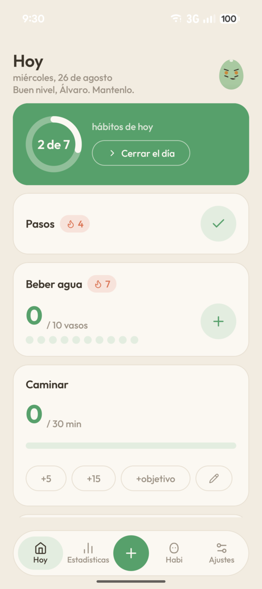
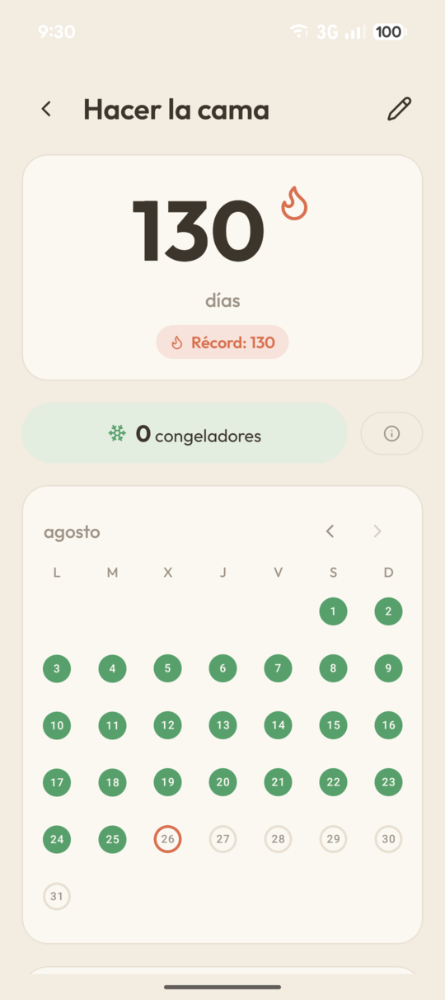
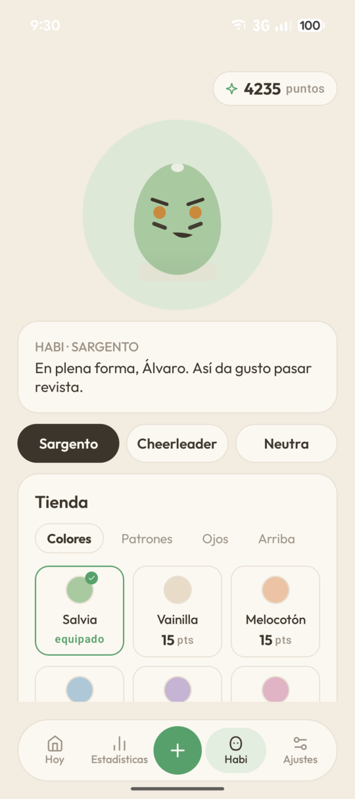

From the home screen
The widget shows today and logs with one tap, no need to go anywhere. Care about just one habit? There's a small widget just for it.
The habit app that won't steal your time. Lives entirely on your phone: no accounts, no cloud, not one line out to the internet.
Version 1.0.0 · Android 8.0 or later · 100% free, GPL-3.0-or-later
The name has a trick
Bito + Habi = habit
That's not a coincidence: in Spanish, hábito is built from Habi and bito. Neither works without the other, same as any habit.
Three ways to log it. Two of them don't even ask you to open the app.
The widget shows today and logs with one tap, no need to go anywhere. Care about just one habit? There's a small widget just for it.
The reminder comes with the button built in. Tap it and it's logged, nothing else to unlock.
One screen at day's end to close out what's left. Seal the day and that's it.



Missing a day doesn't erase a month. Freezers cover the impossible days, and you can backdate an entry when you remember late.
Eight glasses of water, twenty minutes of reading, or one more day without smoking. Each type logs its own way.
The nudge changes tone by time of day and by which voice you picked. Mornings, it sets up the day; nights, it helps close it.
Heatmaps, records, and badges that earn themselves. The numbers are there to show how you're doing, not to show off anywhere.
Habi's face shows your week, dents like jelly right where you touch it, and follows you with its eyes. You dress Habi in the points your consistency earns, and Habi speaks in the voice you pick.
Try it: pick a voice
The same week, told by Sargento
“Acceptable. We both know you've got more.”
Demands out of belief in you. Short sentences, zero filler — praise lands dry, like it was already expected.
The same week, told by Cheerleader
“Good week. And the next one? Even better!”
Celebrates big when it's big, and stays close on bad days. Never sugarcoats a slip.
The same week, told by Neutra
“A steady week. Keep going.”
States with precision, always leaves a small door open. Warm in a low voice, not one exclamation.
You pick it at the start and change it anytime. The face changes too: watch the eyes, eyebrows, and mouth.
The crown jewel
That's why backups aren't a setting buried in Bito: they're part of the engine. Every backup carries everything —habits, entries, streaks, points, badges, and whatever Habi is wearing— and goes to the folder you pick. An SD card, a USB drive, a folder some other app syncs for you. Wherever you say.
A JSON file you open in Notepad and understand. Your data doesn't come back in a format only Bito can read.
Set a password and the file turns unreadable, even to Bito. Without that password there's no way back — and that's exactly the point.
Automatic backups happen and rotate the latest ones, with nothing for you to remember.
Before touching anything, it shows what's coming in and what's changing. You decide, facts in hand.
Encryption
Whoever wants to look inside
Bito doesn't ask you to take its word for it. The code is all out there, and the privacy promise checks out in one line.
The app can't send your data anywhere, because it doesn't declare the permission to. Clone the repository and run this:
grep -o 'android:name="android.permission[^"]*"' \
app/src/main/AndroidManifest.xmlFour show up: notifications, exact alarm, boot, and vibration. INTERNET isn't there — without it, no network works.
Works the same on GrapheneOS. Streak, point, and mood logic lives apart from Android and tests itself.
A feature list can change whenever it's convenient. This can't: it's the app's shape, and the license protects it.
Bito starts with habits because that's where friction shows the most. But the idea underneath is wider: a calm place for everything that's hard to start, with Habi along for it.
A habit that won't start and a task you've dodged for three weeks fail for the exact same reason. Bito already handles the first. The second comes next.
It's a direction, not a calendar. None of this has a date on it.
What's next
F-Droid, Google Play, and whatever else it takes. So nobody has to explain what an APK is.
The thing that's been on your list for a month and isn't a habit. The problem's other half.
Habi's just getting started.
Installs in a minute and won't ask for anything in return. Not now, not later.
Download Bito 1.0.0